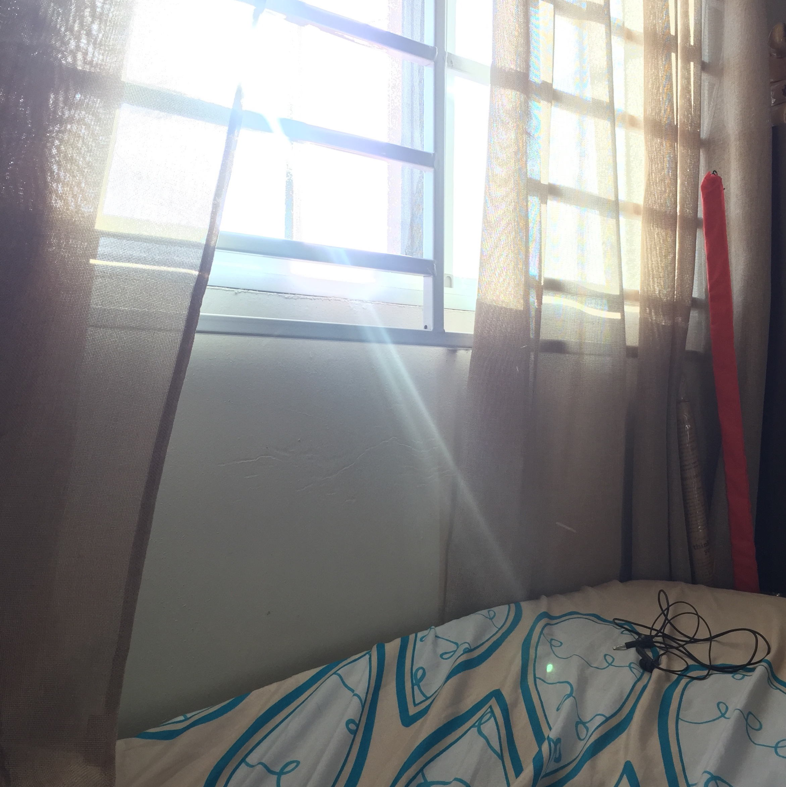
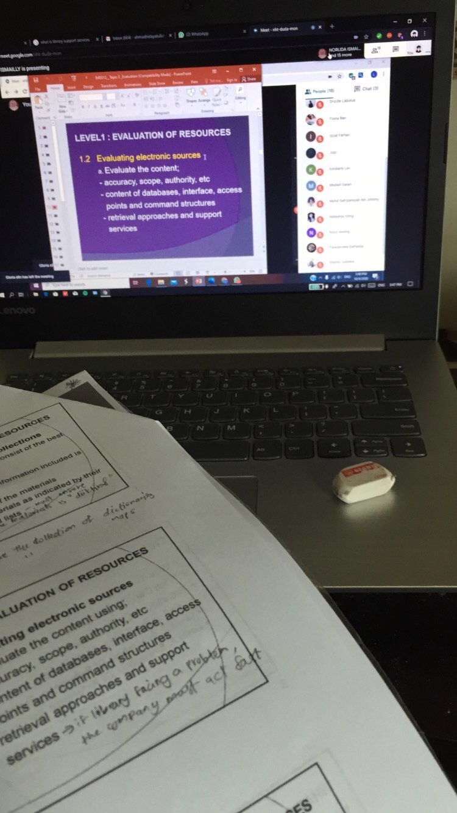
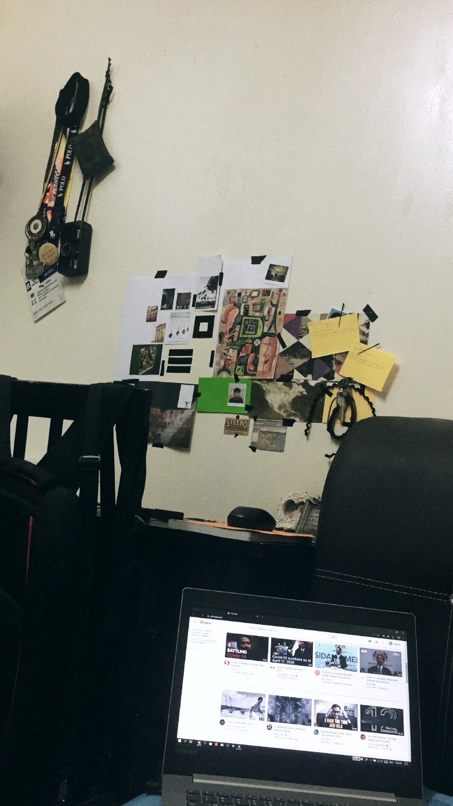
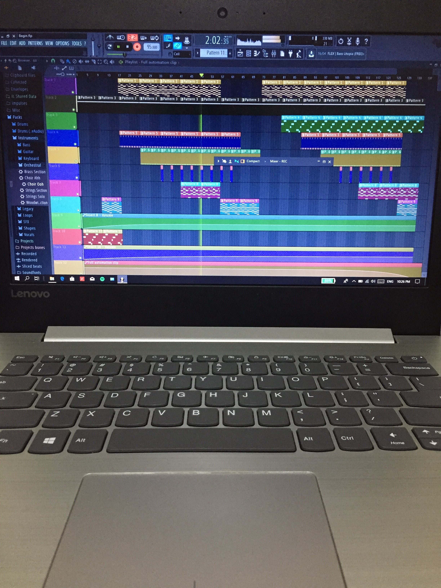

Hi! My name is Ahmad. So ormally my day start off around 10 - 11 a.m. I woke up on that time except whenever I need to wake up early because of classes (ODL).
 Shortly after, my mother along with my sisters preparing for lunch while I'm babysitting my nephew since his mother busy in the kitchen. After that we having lunch. During MCO we always a new type menu that we didn't usually eat before MCO. We also keeping up with the trend like trying Dalgona coffee that went viral on the internet along with other viral foods
There's nothing much on what we do after lunch. We just get rest and mind our own business, some of them watching television and like, me is just chilling on the couch with my phone.
Around 4 p.m, we started to move again maybe having a high-tea or usually for me, I will go helping my father to do some cleaning outside the house. My nephew also go outside to play pretty much during that time we try to do something making our move.
At night, we having dinner and this is where I spend most of the night in my room while others maybe at the living room watching TV. Sometimes I can be productive but also sometimes I'm not.
That is pretty much how's my day going on during MCO and it pretty much repeated on the next day and I can say most of my time I spend in my room.
 